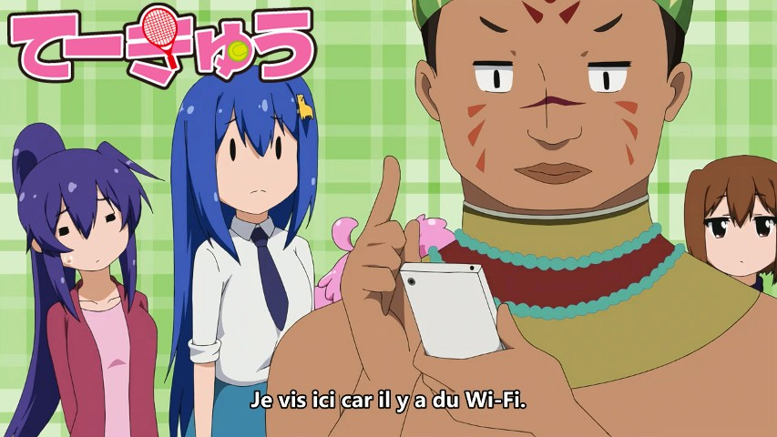

Teekyuu Saison 9 Ep 11 à 12 vostfr

Episode 12 : | |
Sur serveur :
Bonjour à tous,
voici la fin de Teekyuu, cette saison 9 aura comme d'habitude été riche en sous-titres super rapides et en WTF, j'espère qu'elle vous a plu à tous !
Merci à Yohan qui m'a accompagné pour la relecture durant cette saison, grâce à lui je n'ai pas encore fait de V2 ;)
Encore une série achevée, 2 minutes de concentré par semaine qui mettent parfois au défi en traduction comme en édit, même lorsqu'on reprend ceux de la team US comme ici car sinon le temps nécessaire se retrouve doublé xD
Rendez-vous à la saison 10 ?? L'avenir nous le dira :D
PS : un pack torrent Anidex sera ajouté bientôt sur la page de l'anime (dans la barre de menu, Projets terminés/Teekyuu Saison 9).
Téléchargements et streaming
Episode 11 : | |Episode 12 : | |
Sur serveur :